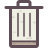

El reciclar o el reciclaje es un acto de suma importancia para la sociedad ya que el mismo supone la reutilización de elementos y objetos de distinto tipo que de otro modo serían desechados, contribuyendo a formar más cantidad de basura y, en última instancia, dañando de manera continua al planeta. El reciclaje está directamente ligado con la ecología y con el concepto de sustentabilidad que supone que el ser humano debe poder aprovechar los recursos que el planeta y la naturaleza le brindan pero sin abusar de ellos y sin generar daños significativos al ambiente natural..
Contenedor Amarillo (envases)
En este se deben depositar todo tipo de envases ligeros como los envases de plásticos (botellas, tarrinas, bolsas, bandejas, etc.), de latas (bebidas, conservas, etc.) En general, deben depositarse todos aquellos envases comercializados en el mercado nacional e identificados por el símbolo del punto verde.
Contenedor Azul (papel y cartón)
En este contenedor se deben depositar los envases de cartón (cajas, bandejas, etc.), así como los periódicos, revistas, papeles de envolver, propaganda, etc. Es aconsejable plegar las cajas de manera que ocupen el mínimo espacio dentro del contenedor y también retirar las grapas, los canutillos y los plásticos que vengan incorporados en el papel y cartón. Si están manchados de residuos orgánicos, como por ejemplo las servilletas de papel, no deben ir en este contenedor.
Contenedor Verde (vidrio)
En este contenedor se depositan envases de vidrio. Pero se debe tener en cuenta que no se puede depositar bombillas, frascos de medicamentos, gafas, jarrones y tazas, loza, lunas de automóviles, porcelana o cerámica, tapones, chapas o tapas de los propios tarros o botellas de vidrio, tubos y fluorescentes.
Contenedor Gris (orgánico)
En él se depositan el resto de residuos que no tienen cabida en los grupos anteriores, fundamentalmente desechos orgánicos catalogados como materia biodegradable.
Contenedor Rojo (desechos peligrosos)
Como teléfonos móviles, insecticidas, pilas o baterías, aceite comestible o aceite de vehículos, jeringas, latas de aerosol, etc.
Contenedor Naranja
Aceite de cocina usado.